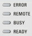

Status LEDs
The status LEDs are located above the standby key in the bottom left corner of the front panel.
 |
They light to indicate the following instrument states:
- ERROR: An error (e.g. a hardware error) occurred during operation. The error impairs the correct functioning and must be eliminated before correct instrument operation can be ensured.
The LED blinks to indicate that the reference frequency is not locked or not available at all. Use the "Setup" dialog to check the frequency and level of the external reference signal.
See also "Sync Settings". - REMOTE: The instrument is controlled via its remote interface.
- BUSY: The instrument is booted, or a software module is loaded.
- READY: The instrument is ready for use, the startup procedure is finished.